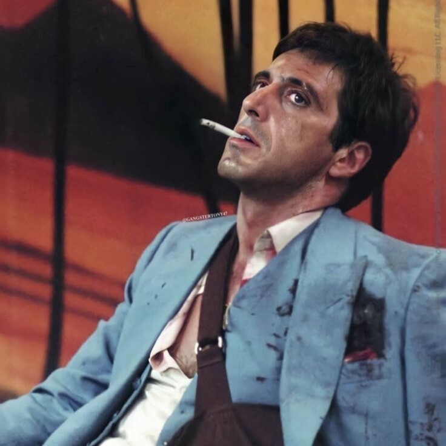
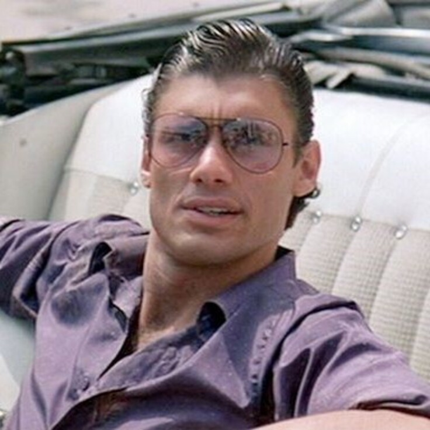
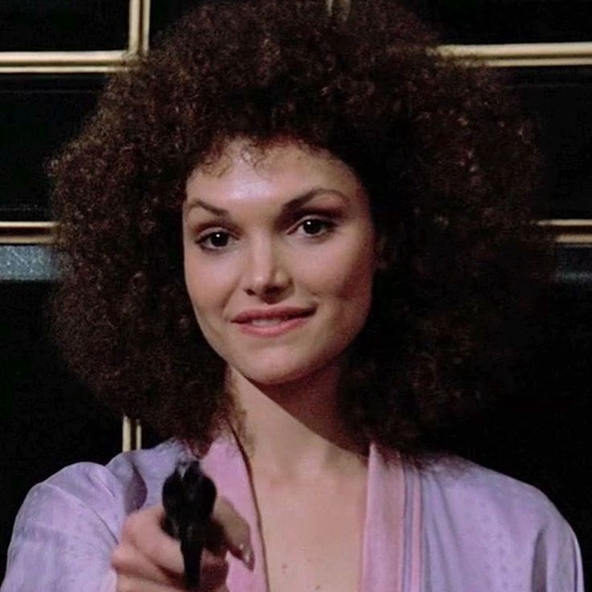
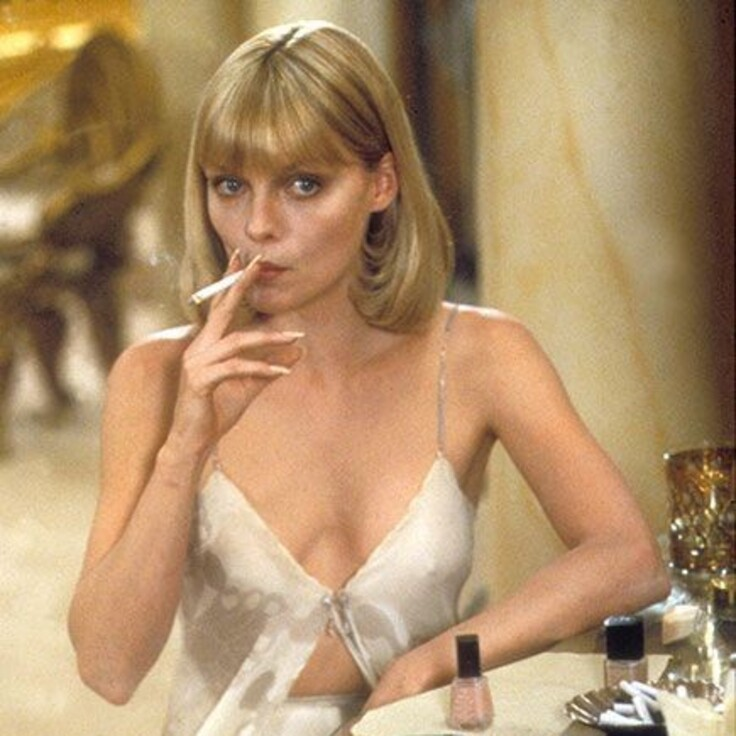
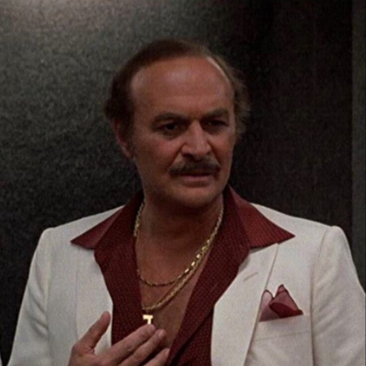
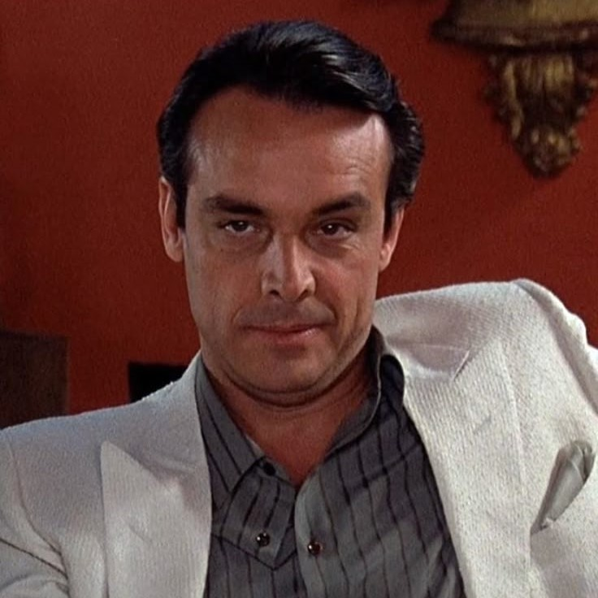
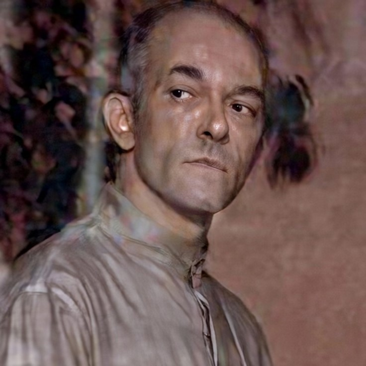
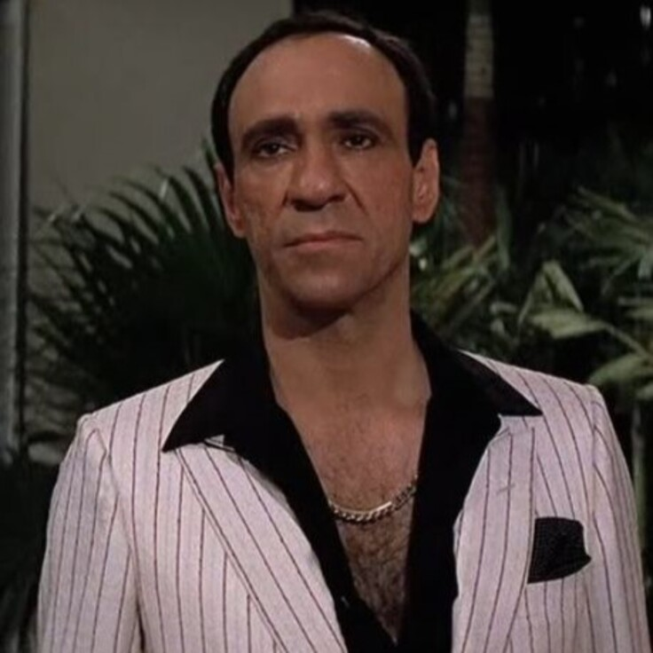

PERSONAJES PRINCIPALES

Tony Montana
Tony Montana
Refugiado cubano que llega a Miami en 1980. Su ambición desmedida y falta de escrúpulos lo llevan a construir un imperio criminal, pero también a su inevitable caída.

Manny Ribera
Manny Ribera
El mejor amigo y mano derecha de Tony. Leal hasta el final, su relación con Gina desencadena una de las tragedias más impactantes de la película.

Gina Montana
Gina Montana
La hermana menor de Tony. Su inocencia contrasta con el mundo violento de su hermano, quien la sobreprotege obsesivamente hasta las últimas consecuencias.

Elvira Hancock
Elvira Hancock
Sofisticada y distante, es inicialmente la amante de Frank Lopez. Tony la conquista como parte de su ascenso, pero su relación se deteriora con el tiempo.

Frank Lopez
Frank Lopez
Jefe del narcotráfico en Miami y mentor inicial de Tony. Su caída marca el ascenso definitivo de Montana al poder absoluto.

Alejandro Sosa
Alejandro Sosa
Poderoso narcotraficante boliviano. Frío y calculador, su influencia internacional y su venganza final sellan el destino de Tony Montana.

Alberto
Alberto "La Sombra"
Sicario profesional de Alejandro Sosa. Experto en "eliminación de desechos", su presencia representa la mano ejecutora del cartel boliviano.

Omar Suarez
Omar Suarez
Contacto inicial de Tony en el narcotráfico y hombre de confianza de Frank Lopez. Su ambición lo convierte en víctima de la traición.